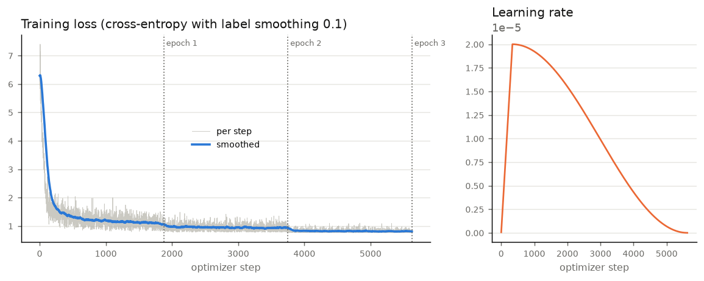
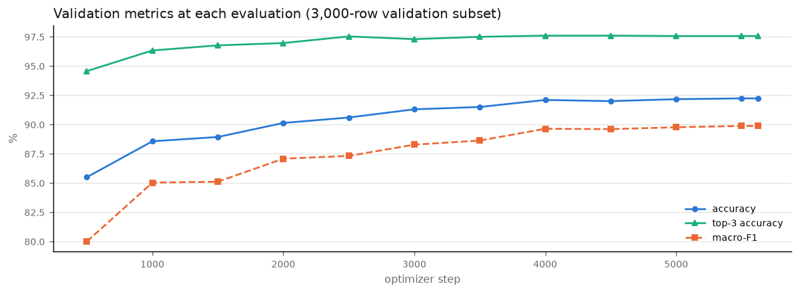
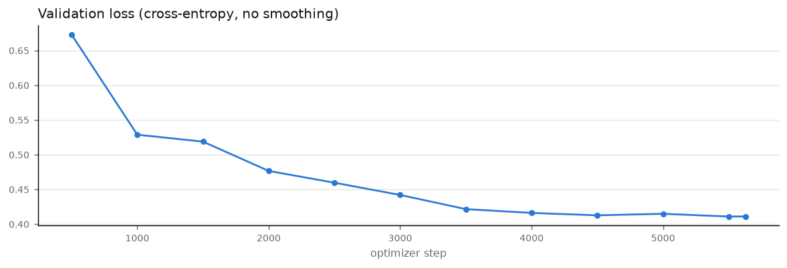
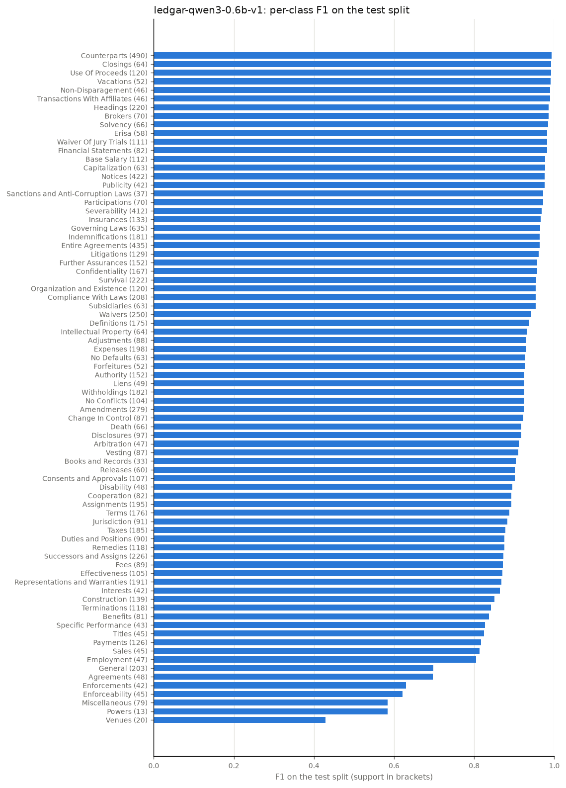

Transformer model: ledgar-qwen3-0.6b-v1
Contract Clause Classifier: LEDGAR clause types, 78 classes, same data and splits for every model.
Fine-tuned transformer. A pretrained language model reads each provision in context and a classification
head maps its final representation to one of the 78 clause types. Latest version: ledgar-qwen3-0.6b-v1.
Test accuracy
92.46%
Test top-3 accuracy
97.69%
Test macro-F1
89.67%
Calibration error
2.2%
Training time
10.0 h
Parameters
596M
Model
| Setting | Value |
|---|---|
| Base model | Qwen/Qwen3-0.6B-Base (Apache-2.0) |
| Architecture | decoder-only transformer, 28 layers, hidden size 1024, MLP 3072, attention 16 query / 8 key-value heads, vocabulary 151,936 |
| Head | linear 1024 → 78 on the last real token |
| Method | full fine-tuning (all weights) |
| Parameters trained | 596,129,792 |
| Serving size | 1.19 GB (bf16 safetensors) |
Training
| Setting | Value |
|---|---|
| Optimizer | AdamW, learning rate 2e-05, weight decay 0.01, warm-up 6%, cosine decay |
| Epochs / steps | 3 epochs, 5,625 optimizer steps (1,875 per epoch) |
| Batch | 4 × 8 gradient accumulation = 32 |
| Regularisation | label smoothing 0.1, gradient clipping 1.0 |
| Max length | 512 tokens per provision |
| Checkpoint selection | best validation accuracy; early stopping patience 4 |
| Compute | a single laptop with 48 GB of memory, built-in GPU via PyTorch (mps); 9.96 h; 25M tokens; peak memory 30 GB |

Validation during training


| Step | Epoch | Accuracy | Top-3 | Macro-F1 | Loss |
|---|---|---|---|---|---|
| 500 | 0.27 | 85.50% | 94.57% | 80.00% | 0.6728 |
| 1000 | 0.53 | 88.57% | 96.33% | 85.03% | 0.5287 |
| 1500 | 0.80 | 88.93% | 96.77% | 85.11% | 0.5187 |
| 2000 | 1.07 | 90.13% | 96.97% | 87.08% | 0.4765 |
| 2500 | 1.33 | 90.60% | 97.53% | 87.32% | 0.4596 |
| 3000 | 1.60 | 91.30% | 97.30% | 88.28% | 0.4419 |
| 3500 | 1.87 | 91.50% | 97.50% | 88.63% | 0.4215 |
| 4000 | 2.13 | 92.10% | 97.60% | 89.64% | 0.4161 |
| 4500 | 2.40 | 92.00% | 97.60% | 89.61% | 0.4126 |
| 5000 | 2.67 | 92.17% | 97.57% | 89.77% | 0.4148 |
| 5500 | 2.93 | 92.23% | 97.57% | 89.88% | 0.4109 |
| 5625 | 3.00 | 92.23% | 97.57% | 89.88% | 0.4109 |
Test results (full 10,000-provision test split)
| Metric | Value |
|---|---|
| Accuracy | 92.46% |
| Top-3 accuracy | 97.69% |
| Micro / macro / weighted F1 | 92.46% / 89.67% / 92.24% |
| Log loss (calibrated) | 0.3644 |
| Calibration error | 7.0% before, 2.2% after temperature 0.804 |

Most frequent confusions
| True clause type | Predicted as | Count |
|---|---|---|
| Taxes | Withholdings | 21 |
| Representations and Warranties | Survival | 13 |
| Assignments | Successors and Assigns | 13 |
| General | Payments | 12 |
| Amendments | Entire Agreements | 10 |
| Benefits | Successors and Assigns | 9 |
| Enforceability | Severability | 9 |
| Miscellaneous | Entire Agreements | 9 |
| Venues | Governing Laws | 8 |
| Successors and Assigns | Assignments | 8 |
| Jurisdiction | Governing Laws | 8 |
| Successors and Assigns | Effectiveness | 7 |
| Expenses | Fees | 7 |
| General | Terminations | 7 |
| Governing Laws | Compliance With Laws | 6 |
| Terminations | Terms | 6 |
| Venues | Jurisdiction | 6 |
| General | Vesting | 6 |
| Construction | Severability | 6 |
| Disclosures | Confidentiality | 5 |
Versions
| Model | Version | Created | Val acc | Test acc | Test top-3 | Test macro-F1 |
|---|---|---|---|---|---|---|
ledgar-qwen3-0.6b-v1 | 1 | 2026-10-11 15:12 | 92.23% | 92.46% | 97.69% | 89.67% |
Training in motion
Recorded from this run: training charts GIF, terminal dashboard GIF, playground GIF.